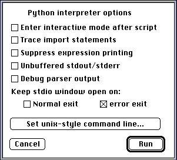
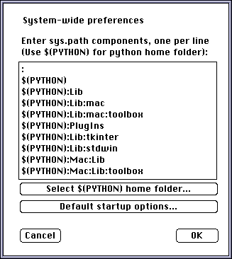

The tutorial, along with other indispensible documentation like the
library reference and such, is also available in a number of different
formats at
ftp://ftp.python.org/pub/python/doc. The Adobe Acrobat .pdf
files are probably a good choice for reading or printing the documents
from your mac.
There is currently no good tutorial for the mac-specific features of Python, but to whet your appetite: it has interfaces to many MacOS toolboxes (quickdraw, sound, quicktime, open scripting, etc) and various portable toolboxes are available too (Tk, stdwin, complex numbers, image manipulation, etc). Some annotated sample programs are available to give you an idea of Python's power.
PythonFAT (for powerpc macs and 68K macs with
CFM68K installed) or Python68K (for 68K macs).
It will always
be recognizable by the "16 ton" icon, though. You start the
interpreter in interactive mode by double-clicking its icon:

This should give you a text window with an informative version string and a prompt, something like the following:
Python 1.5.1 (#122 Aug 27, 1997) [CW PPC w/GUSI MSL] Copyright 1991-1997 Stichting Mathematisch Centrum, Amsterdam >>>The version string tells you the version of Python, whether it was built for PPC or 68K macs and possibly some options used to build the interpreter. If you find a bug or have a question about how the interpreter works it is a good idea to include the version information in your message.
At the prompt you can type interactive python commands. See the tutorial for more information. The interactive window works more-or-less like a Communication Toolbox or Telnet window: you type commands at the bottom and terminate them with the [return] or [enter] key. Interpreter feedback also appears at the bottom of the window, and the contents scroll as output is added. You can use copy and paste in the normal way, but be sure to paste only at the bottom of the document.
SimpleText.
For more serious scripts, though, it is advisable to use a programmers
editor, such as BBEdit or Alpha. BBEdit is
my favorite: it comes in a commercial version but also in a
fully-functional free version BBEdit Lite. You can
download it from the BareBones
site. The free version will probably provide all the functionality
you will ever need. Besides the standard edit facilities it has
multi-file searches and many other goodies that can be very handy when
editing programs.
After you have created your script in the editor of your choice you drop it on the interpreter. This will start the interpreter executing the script, again with a console window in which the output appears and in which you can type input if the script requires it. Normally the interpreter will close the window and quit as soon as the script is done executing, see below under startup options for a way to change this.
There is a BBEdit extension available that allows you to run Python
scripts more-or-less straight from your bbedit source window. Check
out the Mac:Tools:BBPy folder.
It is a good idea to have the names of all your scripts end in
.py. While this is not necessary for standalone scripts
it is needed for modules, and it is probably a good idea to start the
habit now.
If you do not like to start the Python interpreter afresh for each
edit-run cycle you can use the import statement and
reload() function to speed things up in some cases. Here
is Guido's original comment for how to do this, from the 1.1 release
notes:
Make sure the program is a module file (filename must be a Python identifier followed by '.py'). You can then import it when you test it for the first time. There are now three possibilities: it contains a syntax error; it gets a runtime error (unhandled exception); or it runs OK but gives wrong results. (If it gives correct results, you are done testing and don't need to read the rest of this paragraph. :-) Note that the following is not Mac-specific -- it's just that on UNIX it's easier to restart the entire script so it's rarely useful.Recovery from a syntax error is easy: edit the file and import it again.
Recovery from wrong output is almost as easy: edit the file and, instead of importing it, call the function
reload()with the module name as argument (e.g., if your module is calledfoo, typereload(foo)).Recovery from an exception is trickier. Once the syntax is correct, a 'module' entry is placed in an internal table, and following import statements will not re-read the file, even if the module's initialization terminated with an error (one reason why this is done is so that mutually recursive modules are initialized only once). You must therefore force re-reading the module with
reload(), however, if this happens the first time you try to import the module, the import statement itself has not completed, and your workspace does not know the module name (even though the internal table of moduesl does!). The trick is to first import the module again, then reload it. For instance,import foo; reload(foo). Because the module object already exists internally, the import statement does not attempt to execute the module again -- it just places it in your workspace.
'Pyth' and type 'TEXT', you can double-click
your script and it will automatically invoke the interpreter. If you
use BBEdit you can tell it about the Python file type by adding it to
the "file types" sections of the preferences. Then, if you save a file
for the first time you can tell BBEdit to save the file as a Python
script through the "options" choice of the save dialog.
The Scripts folder contains a script
fixfiletypes that will recursively traverse a folder and
set the correct creator and type for all files ending in
.py.
Older releases of Python used the creator code'PYTH'in stead of'Pyth'. If you still have older Python sources on your system and named them with'.py'extension thefixfiletypesscript will correct them.
KeyboardInterrupt exception. Scripts
may, however, turn off this behaviour to facilitate their own event
handling. Such scripts can only be killed with the
command-option-escape shortcut.

The options modify the interpreters behaviour in the following way:
sys.argv. Sys.argv[0] is always the name
of the script being executed, additional values can be passed
here. Quoting works as expected.
Warning: redirecting standard input or standard output in the command-line dialog does not work. This is due to circumstances beyond my control, hence I cannot say when this will be fixed.The default options are also settable on a system-wide basis, see the section on editing preferences.
sys.path, contains the folders
python will search when you import a module. The path is settable on a
system-wide basis (see the preferences section), and normally
comprises the current folder (where the script lives), the
Lib folder and some of its subfolders and possibly some
more.
By the way: the "standard file" folder, the folder that is presented to the user initially for an open or save dialog, does not follow the Python working directory. Which folder is initially shown to the user is usually one of (a) the application folder, (b) the "Documents" folder or (c) the folder most recently used for such a dialog (in any Python program). This is standard MacOS behaviour, so don't blame Python for it. The exact behaviour is settable through a control panel since System 7.5.
PythonStartup this file is executed when you start an
interactive interpreter. In this file you could import modules you
often use and other such things.
'Pyth' and type 'PYC ' load faster when
imported (because they do not have to be parsed). The Lib
folder contains a script compileall.py, running this
script will cause all modules along the python search path to be
precompiled, which will speed up your programs. Compiled files are
also double-clickable.
If the module search path contains a filename as one of its entries
(as opposed to a folder name, which is the normal case) this file will
be searched for a resource with type 'PYC ' and a name
matching the module being imported.
The scripts folder contains a script
PackLibDir which will convert a number of modules (or
possibly a complete subtree full of modules) into such a resource
file.
EditPythonPrefs. For PPC/cfm68k python this is a standalone
program living in the main Python folder, for 68K python it is a
script in the Mac:Scripts folder. The interface to edit the preferences is rather clunky for the current release.

In the editable text field at the top you enter the initial module
search path, using newline as a separator. There are two special
values you can use here: an initial substring $(PYTHON)
will expand to the Python home folder and a value of
$(APPLICATION) will expand to the the python application
itself. Note that the text field may extend "beyond the bottom" even
though it does not have a scroll bar. Using the arrow keys works,
though.
The Python home folder $(PYTHON) is initially, when you install Python, set to the folder where the interpreter lives. You can change it here.
Finally, you can set the default startup options here, through a sub-dialog.
BuildApplet program. You create an
applet by dropping the python source script onto BuildApplet.
Example 2 is a more involved applet
with its own resource file, etc.
Note that while an applet behaves as a fullblown Macintosh application
it is not self-sufficient, so distributing it to a machine without an
installed Python interpreter will not work: it needs the shared python
execution engine PythonCore, and probably various modules
from the Lib and PlugIns folders. Distributing it to a machine that does
have a Python system will work.
EditPythonPrefs
application allows you to set these, in the same way as
double-clicking EditPythonPrefs allows you to set the system-wide
defaults. Actually, not only applets but also the interpreter itself can have non-default settings for path and options. If you make a copy of the interpreter and drop this copy onto EditPythonPrefs you will have an interpreter that has a different set of default settings.
There are some annotated sample programs available that show some mac-specific issues, like use of various toolboxes and creation of Python applets.
The Demo and Mac:Demo
folders in the Macintosh distribution
contains a number of other example programs. Most of these are only
very lightly documented, but they may help you to understand some
aspects of using Python.
Finally, there is a Mac:Contrib folder that contains
a few contributions to Python that I couldn't fit in the normal tree
but did want to distribute (many other contributions are contained
throughout the distribution, but you don't see them, really).
The best way to contact fellow Macintosh Python programmers is to join
the MacPython Special Interest Group mailing list. Send a message with
"info" in the body to pythonmac-sig-request@python.org
or view the Pythonmac SIG
page on the www.python.org WWW
server.
There appear to be problems with QuickTime for the CFM68K version of the interpreter. If you experience these please contact the SIG: some people use quicktime without problems and some not, and we are still hunting for the cause.
Python is a rather safe language, and hence it should be difficult to crash the interpreter of the system with a Python script. There is an exception to this rule, though: the modules that interface to the system toolboxes (windowing, quickdraw, etc) do very little error checking and therefore a misbehaving program using these modules may indeed crash the system. Such programs are unfortunately rather difficult to debug, since the crash does not generate the standard Python stack trace, obviously, and since debugging print statements will often interfere with the operation of the program. There is little to do about this currently.
Probably the most common cause of problems with modules ported from other systems is the Mac end-of-line convention. Where unix uses linefeed, 0x0a, to separate lines the mac uses carriage return, 0x0d. To complicate matters more a lot of mac programming editors like BBEdit and emacs will work happily with both conventions, so the file will appear to be correct in the editor but cause strange errors when imported. BBEdit has a popup menu which allows you to inspect (and set) the end-of-line convention used in a file.
Python attempts to keep its preferences file up-to-date even when you
move the Python folder around, etc. If this fails the effect will be
that Python cannot start or, worse, that it does work but it cannot find
any standard modules. In this case, start Python and examine sys.path.
If it is incorrect remove any Python preferences file from the system
folder and start the interpreter while the interpreter sits in the main
Python folder. This will regenerate the preferences file. You may also
have to run the ConfigurePython applet again.